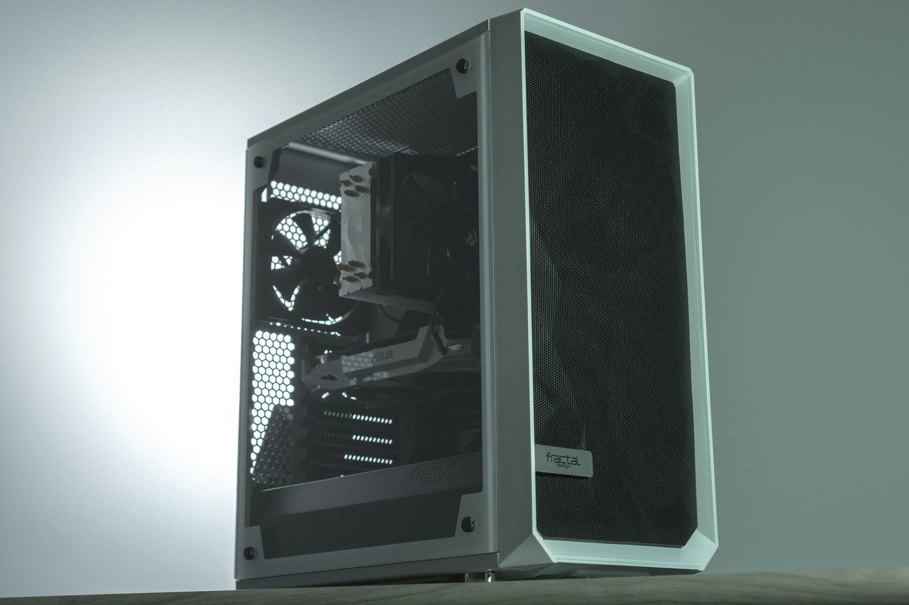
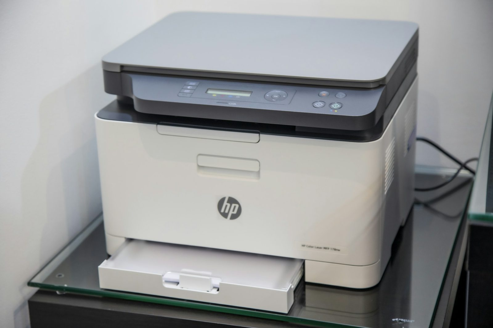
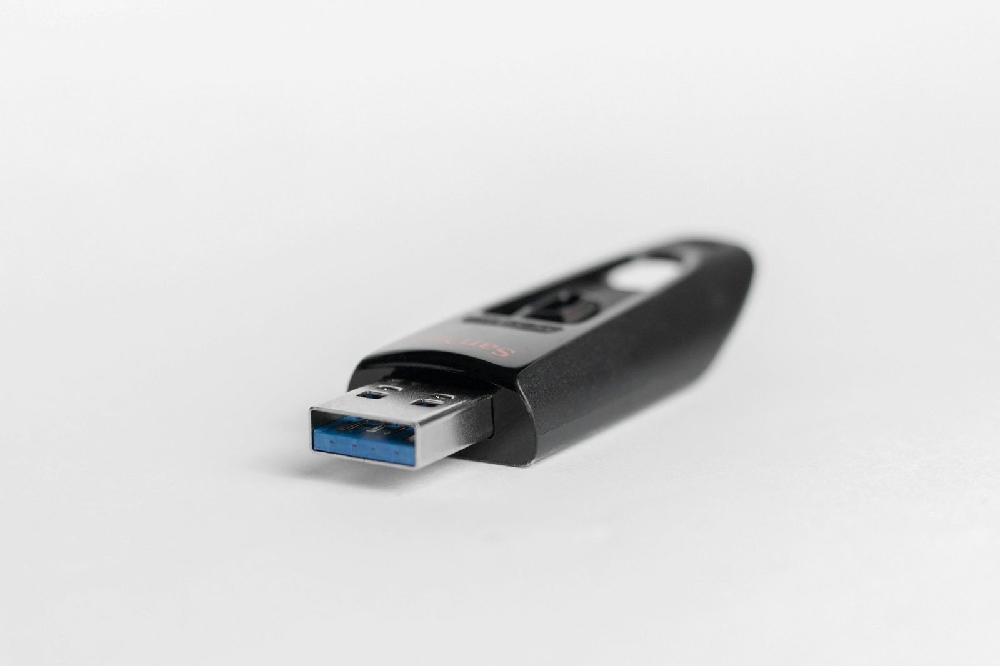
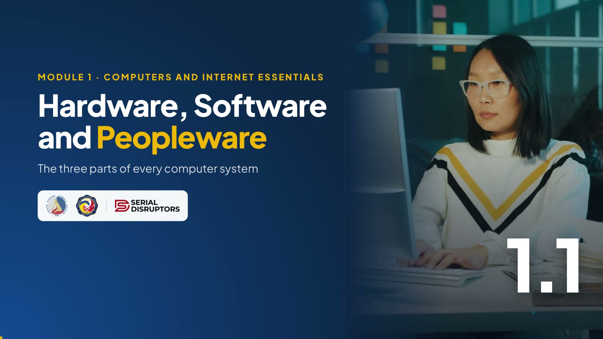

Module 1 · Computers and Internet Essentials
Hardware, Software and Peopleware
The three parts of every computer system, from the PC on your desk at the office to the phone in your pocket.
Welcome everyone. Maayong buntag! Before we touch any app, let's agree on the words we'll use for the next two days.
Every computer system has three parts: hardware, software and peopleware. By the end of these 12 minutes you'll be able to name examples of each, from your own desk.
Warm-up · type in the chat
How many hours a day are you
in front of a screen?
A
Less than 2 hours
B
2 to 4 hours
C
5 to 8 hours
D
More than 8, including my phone at night
Ask them to type A, B, C or D in the chat. Read a few answers out loud.
Most office staff will say C or D once they count their phone. That's the point: we already live inside computer systems. Today we just learn to name the parts so we can use them better and troubleshoot faster.
The big idea
A computer system works like a jeepney.
- Hardware is the jeep itself: the engine, wheels, seats. You can touch it.
- Software is the route and the rules: where to go, when to stop. You can't touch it, but nothing moves without it.
- Peopleware is the driver, the barker and the passengers. Without them, the jeep just sits in the terminal.
Use the jeepney because everyone in CDO rides one. Hardware is the body and the engine. Software is the route sign and the traffic rules. Peopleware is the driver and the passengers.
Ask: "If the driver doesn't know the route, does a brand-new jeep help?" No. That's why a new computer alone never fixes a slow office. We need all three parts working.
Part 1 · Hardware
The parts you can touch
Keyboard, mouse, scanner
Puts data in: typing a TIN, scanning a signed form.

System unit (CPU, RAM)
The "brain" that computes, sorts and checks.

Monitor, printer, speakers
Shows or prints the result for people to use.

Hard drive, SSD, flash drive
Keeps files after you turn the computer off.
Hardware is anything physical. We group it into four jobs: input, process, output, storage.
Point to your own setup on camera: "This is my keyboard: input. My monitor: output." Ask participants to look at their desk and name one device for each group.
Hardware in action
One office task, four kinds of hardware
1 · Input
You type the day's figures and scan the signed request letter.
2 · Process
The CPU adds the totals and formats the table in seconds.
3 · Output
The report appears on the monitor, then prints for signature.
4 · Storage
The file is saved to the shared drive so the next shift can find it.
Walk through one ordinary office task. Every task you do follows this Input → Process → Output → Storage cycle.
The practical value: when you call IT support, you can say exactly which step broke. "The printer is fine but the file never reached it" is far more useful than "the computer is broken."
Part 2 · Software
The instructions you can't touch
System software
Runs the machine itself.
Application software
Does a specific job for you.
System software is the "manager" of the computer: the operating system and drivers. Application software is what you open to get work done.
Zoom, the app we are using right now, is a familiar example of application software. Stress the warning: never install cracked software on an office machine; it's both a legal and a security risk. We'll come back to this in Topic 1.4.
Part 3 · Peopleware
The most important part is you.
- End users use the system to do the work: encoders, examiners, admin staff, and everyone in this training.
- IT support / ICT focal keeps the hardware and software running.
- Developers and system admins build and manage the systems.
- Data owners decide who may see or change information.
Peopleware is the human part. Most computer problems in an office are actually peopleware problems: a wrong file saved, a password shared, a phishing link clicked.
The good news: peopleware is also the easiest part to upgrade. This training is a peopleware upgrade.
See it everywhere
Same three parts, at work and at home
- Hardware: desktop PC, scanner, network printer, biometric time-in device
- Software: Windows, word processor, spreadsheet, email, Zoom
- Peopleware: you, your section chief, the ICT focal person
- Hardware: smartphone, Wi-Fi router, smart TV
- Software: Android or iOS, GCash, Messenger, YouTube
- Peopleware: you, your kids doing online classes, the internet provider's technician
The same model works at home. A smartphone is a full computer system: hardware, an operating system, apps, and you.
Ask: "What's one piece of hardware at home you'd like to use better?" Common answers: the Wi-Fi router, the printer, the smart TV.
Watch · 5½ minutes
The three parts of every computer system
A jeepney, a daily report and a brownout: see how hardware, software and peopleware work together, plus the fourth element many forget, data.

5:33Introduce the video in one or two sentences, then read the While watching task aloud so everyone knows what to look for.
Press → to open the video full screen. In Zoom or Meet, share this tab with computer sound turned on.
Space or K plays and pauses (or click the video). C turns captions on or off; the speed button offers 1.25× and 0.85×. The arrows still move between slides, and the video pauses when you leave this slide.
Length 5:33. Pause anywhere to take a question; captions stay on screen for anyone without sound.
After the video, go back to the While watching task: ask two or three people for their answers.
Activity · in the portal
Hardware, software or peopleware?
Click the timer to start the 2-minute countdown. Let them sort in the portal; the live panel shows who has finished.
Common confusion: #6, the client. They're peopleware too: any person who uses the system counts. Also #8: antivirus is software, even though it "protects" hardware.
Quick check · click an answer
Your PC feels slow, so the ICT focal person installs a Windows update. What did they update?
 Word or
Word or  Chrome that you use for work.
Chrome that you use for work.Let them answer in the portal first, then click the options to reveal. B, system software.
Use this to segue to the next slide: updates keep the software healthy; next, the habits that keep the hardware safe, because brownouts are a real risk for office files here in Mindanao.
Practical tips
Five habits that save your files and your PC
- Save often with Ctrl + S. A brownout erases unsaved work.
- Plug the PC into a UPS, not straight into the wall or an extension cord.
- Shut down properly through the Start menu, never by pulling the plug.
- Keep it cool and clean: no food or drinks near the keyboard; keep the vents clear.
- Report problems early to your ICT focal person, and describe which step failed.
These are habits, so they're peopleware fixes for hardware risks.
Ask: "Who has lost a file to a brownout?" Someone always has. Ctrl+S every few minutes is the cheapest insurance there is.
Recap · Topic 1.1
Every computer system needs all three parts, all working on your data.
Hardware
The physical parts: input, process, output, storage.
Software
System software runs the machine; applications do your work.
Peopleware
You. The part that decides whether the system is used well.
Next · 1.2 Desktop and File Management: putting every file where you can find it again.
Summarize in one breath: hardware you can touch, software you can't, peopleware is you.
Bridge to 1.2: "Now that we know the parts, let's organize the thing we actually work with every day: our files."